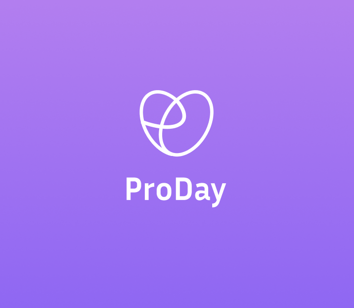

ProDay
UI Design . Graphic Design
ProDay is a mobile app designed to help users organize their daily tasks while maintaining a healthy balance between productivity and wellbeing. Unlike typical to-do list apps, ProDay integrates a Mood Tracker and Mind-Body Break System, encouraging users to take mindful pauses during their busy schedules.
Tools: Figma, Photoshop, Adobe Illustrator, After Effects

Problem
Many productivity apps focus only on efficiency — they help users plan but not sustain their energy or motivation. As a result, people often experience burnout or mental fatigue while trying to stay productive.Solution
ProDay combines two key features in one seamless flow: Daily Planner: Set and organize your to-dos, deadlines, and priorities with clarity. Mood & Wellness Tracker: Take short guided breaks based on your current mood — including breathing exercises, stretching tips, and micro-meditations.Design
The UI uses soft gradients, rounded elements, and minimalistic icons to evoke calmness and balance, aligning with the app’s mental wellness focus.Experience the design